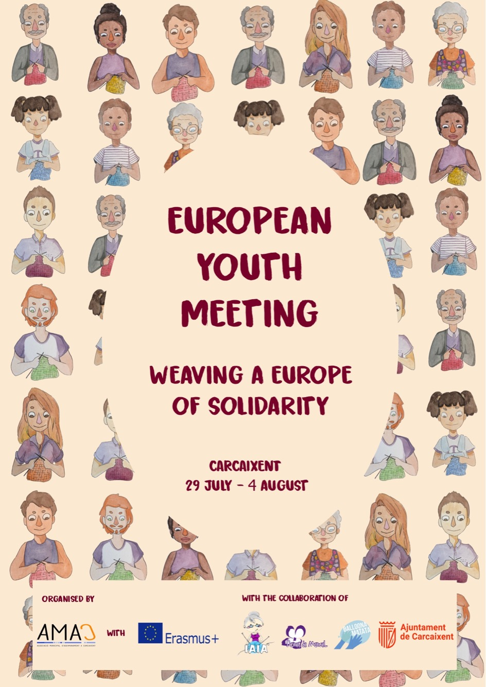

Goals
To promote solidarity, active citizenship and intergenerational dialogue, while giving participants space to share personal experience.
Europe for Citizens
Craft became a way to discuss cooperation, volunteering and relationships between generations.

A common thread
The project strengthened relationships between young Europeans and the existing ties between towns in the partner network.
To promote solidarity, active citizenship and intergenerational dialogue, while giving participants space to share personal experience.
Craft workshops, meetings with community organisations, educational visits and public presentations of the project.
The youth group learned to weave, invited new participants, visited a university and explored historical tools and older residents’ experience at the agricultural museum in Sitno.
Would you like to involve your group in a similar project? Let’s talk.
Write to us